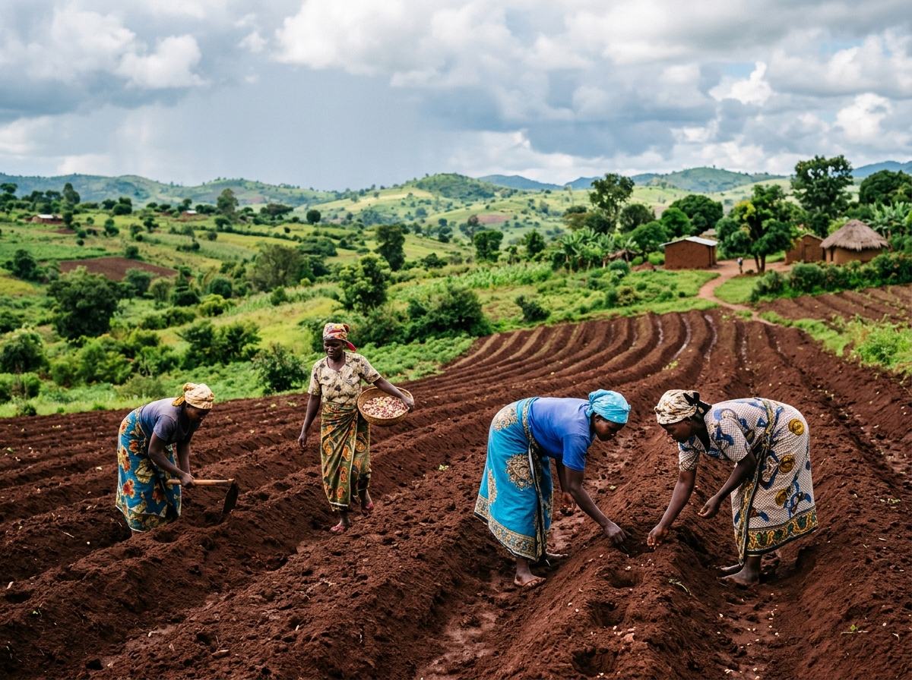
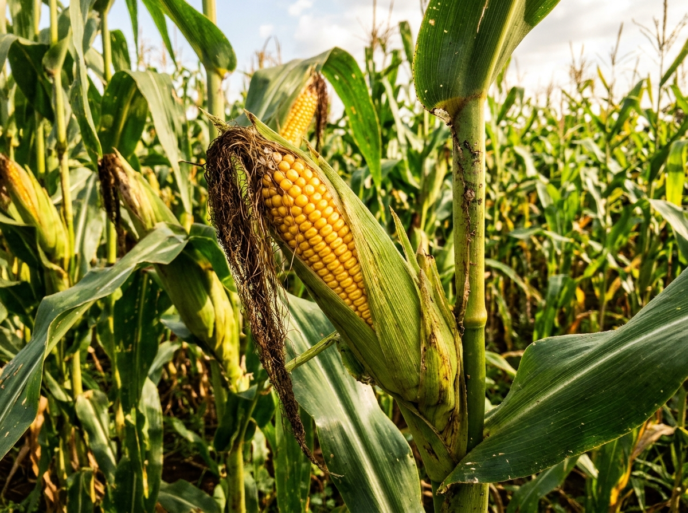
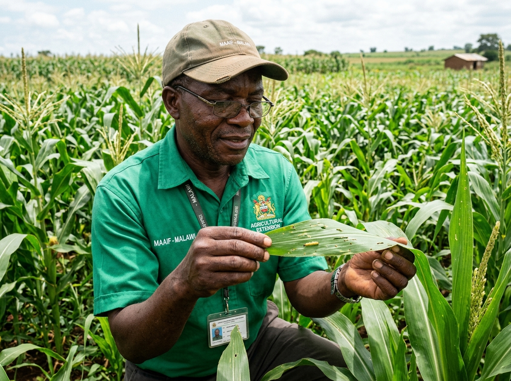

Mitu ya Ulimi wa Malawi (V5 mpaka V29)
Onani magawo onse a mapulani athu kuyambira zatsopano zotsegulidwa (Phase 1) mpaka kumalizira kwa pulogalamu yathu ya chidziwitso cha ulimi m'Malawi.
Phase 1: Core Upgrades (Zikugwira Ntchito Tsopano)

Agricultural Market Information Centre
Mitengo ya chimanga, mtedza, soya, ndi mpunga m'misika yosiyanasiyana ya m'Malawi yokhala ndi zitsimikizo.

Farming Calendar
Ndondomeko ya mwezi ndi mwezi yotsatira zochitika za m'munda, zikumbutso za nyengo ndi kubzala mbewu.

Advanced Crop Library
Mbewu zoposa 16 zofotokozedwa m'makadi ochititsa chidwi ndi malangizo a feteleza, nthaka ndi tizilombo.

Pest & Disease Management
Kuzindikira tizilombo ndi matenda a mbewu, zizindikiro zake komanso mankhwala oyenera ndi chitetezo.
Phase 2: Smart Farming Tools (Zipangizo Zaulimi)
Soil Information Centre
Mitundu ya nthaka ku Malawi, kusanthula nthaka, ndi njira zokonzera chonde.
Fertiliser Calculator
Kuwerengera feteleza wa pansi (23:10:5) ndi wa pamwamba (Urea) molingana ndi kukula kwa munda.
Farm Planning Tools
Kuwerengera mbewu zofunika, ndalama zogwiritsidwa ntchito komanso zokolola zoyembekezeka.
Irrigation & Water Management
Njira zothirira za dambo, kusamala madzi a mvula, ndi ulimi wa nthawi ya dzuwa.
Livestock Farming Centre
Ulimi wa nkhuku, mbuzi, nkhumba ndi ng'ombe, chakudya ndi thanzi la ziweto.
Phases 3 – 5: Digital Agriculture & Professional Platform
Agricultural Learning Centre
Maphunziro a ulimi, mavidiyo, zolemba zotsitsidwa ndi mayeso a alimi.
Farmer Community Hub
Kukambirana kwa alimi, kugawana luso ndi chidziwitso m'maboma osiyanasiyana.
Agricultural News & Research
Mauthenga a Unduna wa za Ulimi, ndondomeko za boma ndi kafukufuku watsopano.
Farmer Marketplace
Kugula ndi kugulitsa zokolola ndi zipangizo za ulimi m'Malawi monse.
Farmer Accounts & Profiles
Lembetsani akaunti ya mlimi, sungani mbiri yanu, ndi kulumikizana ndi pulogalamu ya Ulimi wa Malawi.